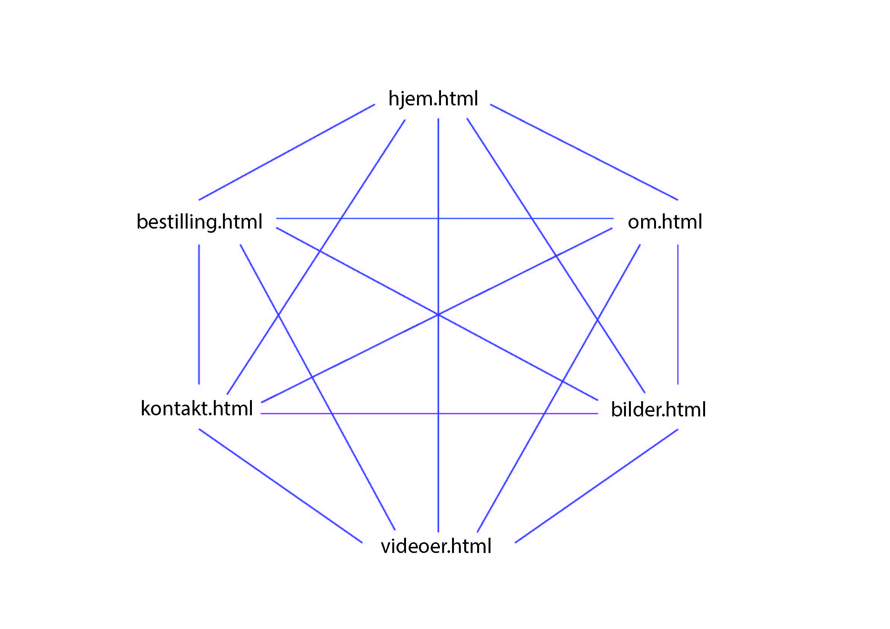
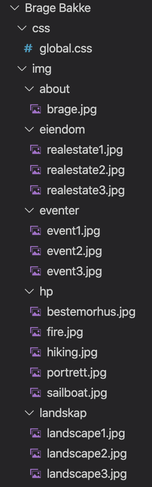
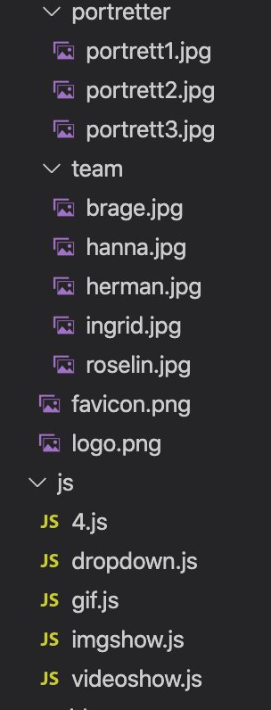
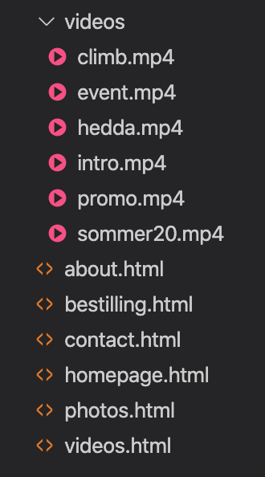

Klientens navn, navn på nettsiden og kontakpersonen er Brage Bakke.
Formål: Synliggjøre Brage Bakke som produsent av digitalt innhold.
Mål: Markedsføre Brage Bakke som digital innholdsprodusent. Det skal være enkelt å komme i kontakt med Brage, og også uproblematisk å kikke på hans tidligere arbeid.
Publikum: Privatpersoner og bedrifter som ønsker profesjonelt digitalt innhold.
Formålet er å levere tjenester som er knyttet til digital innholdsproduksjon, og nettsiden blir til for at Brage enkelt skal kunne henvise til tidligere arbeid.
Nettsiden blir en plattform hvor eventuelle kunder kan skape seg et inntrykk av hvordan Brages ferdigheter vil kunne være fordelaktig for dem.
Målet er at dette gjøres brukervennlig, og fremstilles på en oversiktlig måte.
Gjennom bilde- og videogalleriet vil kunden kunne danne seg et helhetlig bilde av Brage som fotograf, og kategoriseringen vil forenkle prosessen for kundene.
Gjennom hans portefølje vil de kunne bli inspirert og informert om hans arbeidsteknikk og tidligere resultater.
På “om”-siden vil kundene få en dypere tilknytning til Brage, noe som er med på å skape tillit, som ofte er viktig for resultatene for film og foto.
I all hovedsak vil målgruppen være potensielle kunder. Den typiske kunden er på jakt etter digitalt innhold som de ikke har mulighet til eller ønske om å produsere selv.
Hva som kjennetegner målgruppen vil defineres av deres ønske om bedre digitalt innhold, enten for seg selv eller for sin bedrift.
Det kan være privatpersoner som ønsker å forevige store eller små milepæler i livet, eller en bedrift som ønsker en promovideo for sine prosjekter.
I prosessen vil et godt samarbeid være avgjørende for et godt resultat.
Navigasjonsstrukturen på vår nettside fungerer som en “klikk”, det vil si at alle sidene på nettsiden kan nås uavhengig av hvor en befinner seg.
Linkene i denne “toolbaren” er alltid synlige og tilgjengelige for brukerne av nettsiden.
Under "videoes" og “images” vil det være en subnav-bar med ulike kategorier.
Når en velger kategori havner en på en egen side for denne kategorien slik at en unngår å bruke unødvendig tid/data på å laste inn bilder en ikke vil se på.
Vi vil også ha knapper for ulike måter å henvende seg til Brage på nederst på siden, slik at brukerne raskt kan få kontakt med Brage.
Med tanke på at det er relativt få faner og linker på nettsiden, tenker vi at dette er det mest optimale navigasjonssystemet å benytte seg av.
Det blir et naturlig handlemønster inne på siden.

Ettersom formålet med nettsiden er å tiltrekke seg besøkende og hjelpe dem med å forstå tjenesten vår, har vi gått for et rent og brukervennlig design.
Vi har valgt en mørk og nøytral bakgrunnsfarge på nettsiden da fokuset skal være på bildene og videoene.
Designet skal derfor være enkelt og intuitivt, og det skal til enhver tid være enkelt å navigere seg rundt på nettsiden uten komplikasjoner og forstyrrelser.
Nettsiden vår skal bestå av 6 individuelle nettsider som man lett skal kunne manøvrere seg til og fra ved hjelp av navbaren.
Sidene skal kunne gi brukeren god innsikt i innholdet og stilen til Brage slik at de raskt skal kunne avgjøre om dette er noe som appellerer til dem.
Stylingen av nettsiden som vil gjelde for alle sider er listet opp nedenfor:
For å ha en mest mulig strukturert plan har vi lagt oppgavene våre inn i Trello ( link).
Dette gjør det mulig for oss å delegere oppgaver på en enkel måte, samt at vi har god oversikt over hvem som har ansvar for hva i tillegg til hvordan vi ligger an.
For å unngå misforståelser er det grundige forklaringer på hva som skal gjøres.
Vi har organisert tavlene i fire kategorier, som er To Do, pågår, review og ferdig.
Dette gjør det enkelt å sette seg inn i hvor i prosessen en befinner seg.
I sjekklisten til hvert element er det også mulig å krysse av slik at en enkelt kan se hva som er ferdig og hva som mangler.
Som gruppe har vi også en gitHub for å kunne dele og samarbeide om kodene.
All html, css og js ligger der inne slik at alle har tilgang til enhver tid.
Link til gitHub er her, slik at du kan følge oss. I tillegg bruker vi Google Drive for å dele tekst og større elementer, dette lar oss også skrive i samme dokument samtidig, noe som har vært svært hensiktsmessig.
Link til figma er her.
Vi har planer om å gjøre siden responsiv.
Da er det viktig å huske på at størrelsen på elementene (f.eks. bilder) skrives i prosent og ikke i px.
Vi har også tenkt litt på hvordan layouten blir seendes ut. I images fanen har vi tenkt at et og et bilde kommer under hverandre istedenfor ved siden av hverandre.


